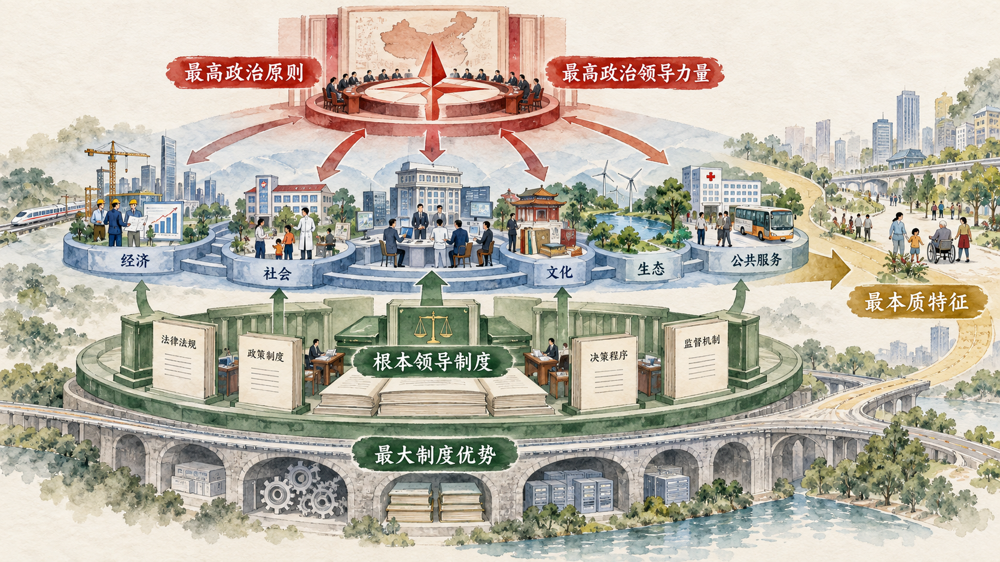
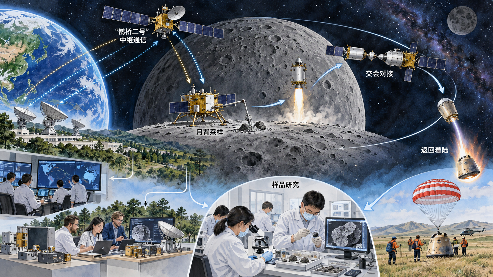
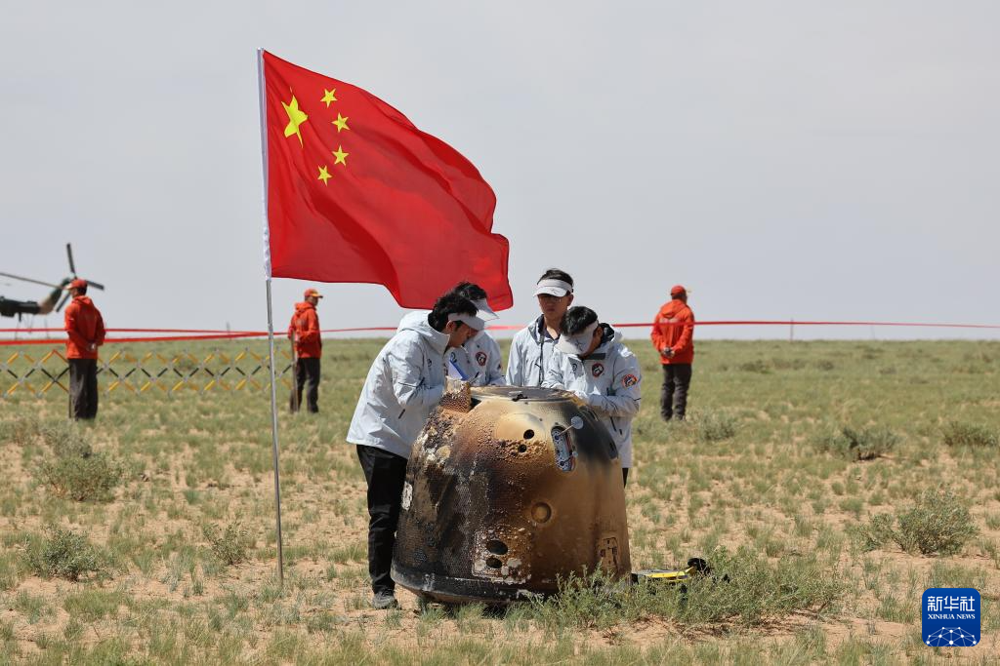

从历史地位到制度效能
“最本质的特征”回答中国特色社会主义由什么力量领导、保持什么根本方向；“最大制度优势”回答这种领导怎样统领和贯通各方面制度；“坚强保证”则要求进一步观察领导优势怎样通过组织、政策和执行转化为实践结果。本节依次讨论历史形成、制度优势和新时代实践三个层次。

一、中国最大的国情就是中国共产党的领导
理解中国国情，既要看人口、资源、发展阶段和区域差异，也要看近代以来国家发展由什么政治力量组织和推动。教材指出：“中国最大的国情就是中国共产党的领导。”这里的“最大”不是用一个因素代替其他国情，而是强调党的领导规定中国发展道路和制度运行的政治方向。
近代以后，各种救国方案先后展开，却没有完成民族独立、人民解放和国家富强、人民幸福的历史任务。中国共产党成立后，团结带领人民进行革命、建设和改革，使国家从四分五裂、积贫积弱走向独立统一和发展进步。党的领导地位因此不是脱离历史过程的抽象设定，而是在解决中国社会主要问题、改变人民命运的长期实践中形成的。
党的领导同人民当家作主具有内在联系。人民当家作主需要国家制度保障，也需要能够代表、组织和凝聚最广大人民的政治力量。党领导人民建立人民当家作主的国家政权，确立并发展国体、政体以及各方面制度，使人民的政治权利获得制度载体。理解党的领导，要同时看到领导力量、人民立场和制度建设，不能把三者割裂开来。
二、中国共产党领导是中国特色社会主义制度的最大优势
制度优势不是一项孤立制度的局部效果。教材指出，党的领导这一优势是“带有统领性的根本优势”，贯穿中国特色社会主义制度和国家治理体系其他方面显著优势之中。党的领导能够提供共同方向，协调不同领域和部门，形成长期稳定的政策目标，并把分散的资源和行动组织起来。
这种优势的形成至少包含三个环节。首先，马克思主义科学理论为认识形势、把握规律和制定路线方针政策提供思想基础。其次，中国共产党具有严密组织体系、严明组织纪律和联系群众的政治优势，能够把共同目标转化为组织行动。再次，党发挥总揽全局、协调各方作用，使人大、政府、政协、监察机关、审判机关、检察机关等在统一方向下依法依章程履行职责。
从党的自身优势到制度优势，再到治理效能，中间需要具体机制。目标需要被分解，职责需要被确定，资源需要被配置，信息需要及时反馈，执行需要接受监督。只有这些环节有效衔接，制度优势才能在解决真实问题的过程中表现出来。
案例研究｜嫦娥六号：一块月背样品为什么需要一张国家协同网
月球背面始终背向地球，探测器无法同地面直接通信。嫦娥六号要实现人类首次月球背面采样返回，不只是把一个探测器送上月球，还要连续完成发射入轨、地月转移、环月飞行、月背软着陆、自动采样、月面起飞、月球轨道交会对接、样品转移和高速返回等环节。任何关键节点失误，都可能使整项任务无法完成。
任务首先需要解决“看不见、联不上”的通信问题。2024 年 3 月发射的鹊桥二号中继星在地面和月背探测器之间转发信号，为嫦娥六号月背工作提供通信支持。嫦娥六号探测器本身由轨道器、返回器、着陆器和上升器组成，不同组合体在任务各阶段分离、对接和转移样品，测控通信、工程图像、轨道计算、着陆回收等地面系统同时配合。
这张协同网也延伸到国际科学合作。任务搭载了法国氡气探测仪、欧洲空间局月表负离子分析仪、意大利激光角反射器等国际载荷。国际合作没有取消统一任务目标，而是在明确接口、技术标准和任务时序的基础上，让不同团队的设备进入同一工程系统。
2024 年 6 月 25 日 14 时 7 分，嫦娥六号返回器携带月背样品安全着陆于内蒙古四子王旗预定区域。6 月 28 日，国家航天局举行样品交接仪式，经测量，任务采集月球样品 1935.3 克。此后，任务由工程实施阶段转入样品存储、处理和科学研究阶段。一项国家任务由此继续转化为面向科学共同体的知识生产。


这一案例中的“集中力量”包含清晰目标、系统分工、技术标准、组织协调和全过程控制。国家确定战略任务，工程总体组织复杂系统，各单位对具体技术负责，科学机构承接后续研究，国际载荷按照共同接口协作，最终形成统一目标下分工负责的组织体系。
讨论题
- 如果把嫦娥六号当作一个超大型小组作业，最容易在哪个协作环节失败？国家重大科技工程怎样降低这种风险？
- “集中力量”是否等于只依靠行政命令？从任务分工、技术标准和责任机制中可以看到哪些更具体的条件？
- 国家战略目标与科学共同体的探索兴趣怎样形成相互支持？
资料来源：国家航天局《嫦娥六号月球背面采样返回》，2024 年 6 月 25 日；国家航天局《嫦娥六号带回 1935.3 克月球样品 交接至地面应用系统》，2024 年 6 月 28 日；新华网《嫦娥六号返回器安全着陆实现世界首次月球背面采样返回》，2024 年 6 月 25 日。
新闻摘录｜月背样品返回后，国际科学界在关注什么
2024 年 6 月 25 日，《自然》网站报道，人类首次从月球背面取得的岩石样品已经返回地球。月球背面与面向地球的一面在地形、火山活动痕迹和地壳厚度上存在明显差异，却长期缺少能够在实验室直接分析的样品。嫦娥六号在南极—艾特肯盆地开展采样，为研究这一巨大撞击盆地及月球早期演化提供了新材料。
报道关注的重点已经从“能否返回”转向“样品能够回答什么科学问题”。科研人员可以测定岩石的年龄、矿物组成和化学特征，分析月球背面火山活动持续时间，并比较月球正面与背面的形成过程。随后公布的首批研究表明，样品记录了跨越数十亿年的火山活动，为认识月球正背面差异提供了新的实物证据。
科学成果还取决于样品管理、实验室能力和学术合作。月背样品数量有限，需要形成规范的申请、分发和保存制度，并让不同研究团队使用多种方法交叉验证。嫦娥六号的工程完成由此打开了一个新的科学研究阶段。
讨论题
- 为什么重大科技工程既需要明确的国家任务，也需要让科学问题保持开放？
- 国际学术评价可以从哪些方面帮助我们认识一项国家工程的实际影响？
资料来源：Ling Xin, “First ever rocks from the Moon’s far side have landed on Earth,” Nature, 2024-06-25；Davide Castelvecchi, “First rocks returned from Moon’s far side reveal ancient volcanic activity,” Nature, 2024-11-18。中文节译。
三、加强党的全面领导为新时代党和国家事业发展提供了坚强保证
党的十八大以来，坚持和加强党的全面领导首先表现为领导核心作用更加明确，党的领导制度体系不断完善。过去一些领域曾存在党的领导弱化、虚化、淡化问题。通过加强政治建设、完善请示报告和重大决策部署落实机制，党的领导由原则要求进一步转化为覆盖各层级、各领域的制度安排。
领导能力也体现为政治领导力、思想引领力、群众组织力和社会号召力。政治领导力保证方向和重大决策保持一致，思想引领力形成认识和行动基础，群众组织力把人民群众动员和组织起来，社会号召力连接不同群体和社会力量。四种能力共同作用，才能使共同目标转化为广泛参与的实践。
新时代重大任务说明，坚强保证不是替代专业部门，而是使不同专业系统在共同方向下充分发挥作用。面对改革发展稳定任务和重大风险挑战，党的领导需要在判断方向、统筹资源、协调行动、联系群众和检查落实等方面形成完整链条。